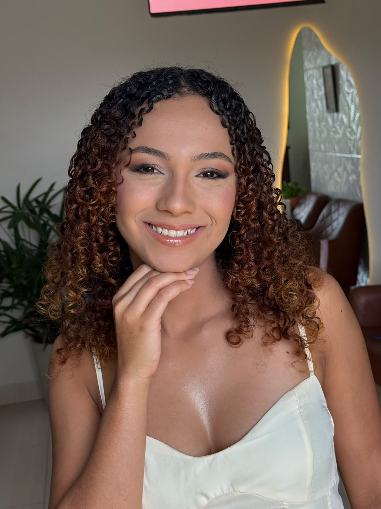
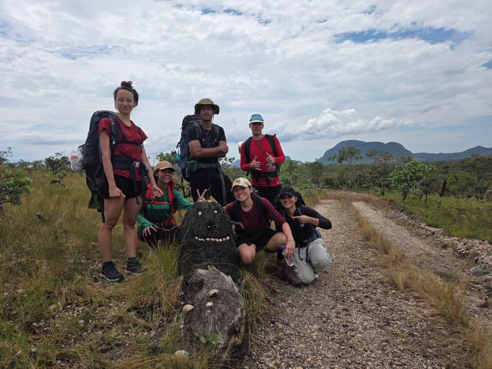
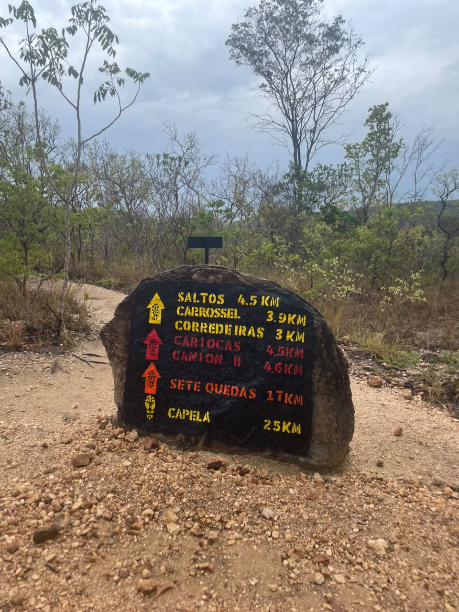
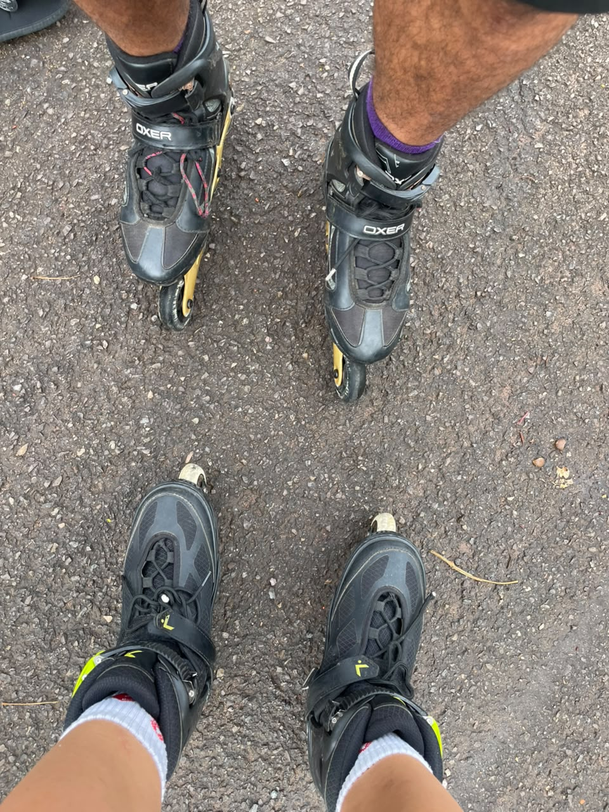
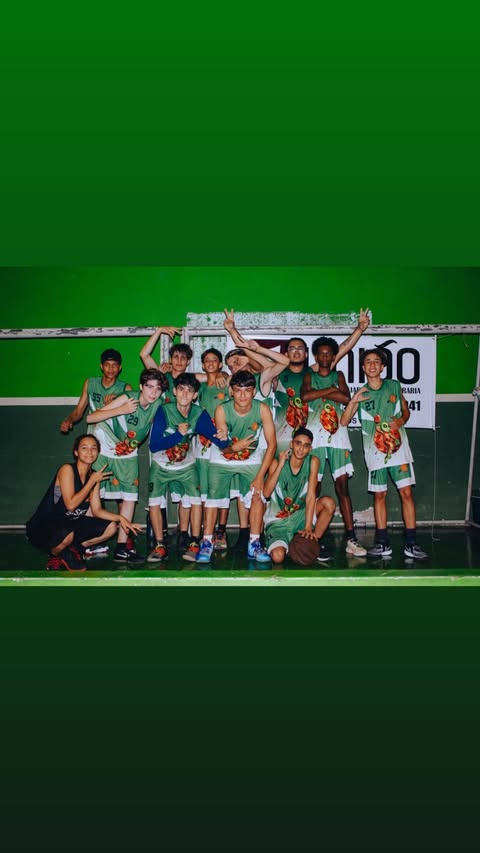
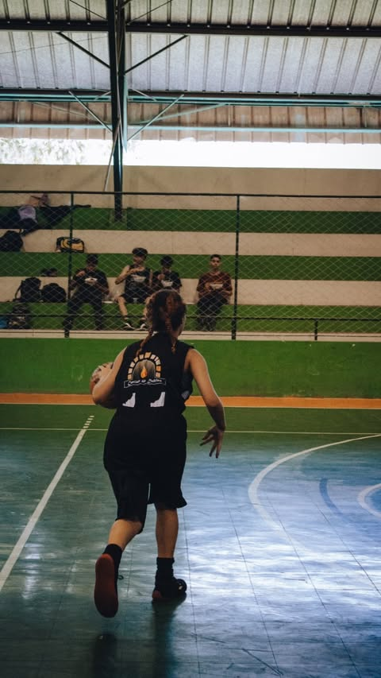

Desenvolvimento
HTML · CSS · C · JavaScript
Em aprendizadoOlá! Seja bem-vindo.
Engenharia de Software · rumo à Inteligência Artificial
Penso em infinitos para construir tecnologia que cabe a todas as pessoas.

Oiiee, eu sou a Luisa. Estudo Engenharia de Software e quero dedicar minha carreira à Inteligência Artificial.
A matemática é o que mais me encanta, gosto de me desafiar, de ver como padrões e provas se transformam em ferramentas que resolvem problemas reais. É por isso que o infinito virou meu símbolo, uma ideia que nunca termina de ser explorada.
Quero criar tecnologia que seja acessível desde o primeiro rascunho, e não um ajuste feito no fim.
Estou construindo minha base em programação, banco de dados e desenvolvimento web, enquanto exploro como a inteligência artificial pode ampliar o acesso ao conhecimento.
Entre lógica, curiosidade e propósito, sigo aprendendo — uma linha de código de cada vez.
O caminho também faz parte da construção
Cada etapa acrescenta uma nova perspectiva ao que quero construir.
Encerramento de um ciclo e início da preparação para seguir na área de tecnologia.
Começo da graduação e aprofundamento em lógica, programação, banco de dados e desenvolvimento de software.
Desenvolver projetos, fortalecer minha base técnica e explorar aplicações de IA mais acessíveis e sustentáveis.
Ferramentas para transformar ideias em soluções
Uma visão honesta do que estou estudando e das áreas que quero explorar.
HTML · CSS · C · JavaScript
Em aprendizadoSQL · MySQL · Modelagem relacional
Em aprendizadoGit · GitHub
Em aprendizadoInteligência Artificial · Acessibilidade · Sustentabilidade
Área de interesseAs habilidades evoluem com a prática. Esta seção será atualizada conforme novos conhecimentos e projetos forem incorporados.
Perguntas que merecem ser exploradas
Um espaço para pesquisas, hipóteses e experimentos que podem se transformar em projetos.
Como reduzir consumo de energia e recursos sem perder eficiência de processamento?
Quais caminhos prolongam a vida útil de equipamentos e fortalecem a economia circular?
Como projetar experiências úteis para pessoas com diferentes habilidades, dispositivos e conexões?
Como decisões de código, arquitetura e interface podem contribuir para sistemas mais leves?
Como produzir software que proiba pessoas vicias em bet de ter acesso a propagandas e plataformas de jogos ilegais?
Aprender fazendo
Mais do que mostrar o resultado, quero registrar o problema, as decisões e os aprendizados por trás de cada construção.
Uma iniciativa de pesquisa para pensar em ferramentas de inteligência artificial considerando acessibilidade, inclusão e impacto no uso cotidiano.
Investigação sobre o destino de computadores e equipamentos que deixam de atender às necessidades de data centers.
Estudo de princípios de acessibilidade digital e de como considerar conexões lentas, dispositivos antigos e diferentes formas de interação.
Um software em que leve bloqueia anuncios de bet para pessoas viciadas em tal.
Os itens apresentados como pesquisa ou proposta não representam produtos finalizados. O objetivo é documentar ideias, perguntas e aprendizados em andamento.
Além do codigo
O que me interessa é o que podemos transformar com ela — e quem consegue participar dessa transformação.
Enxergar padrões, investigar possibilidades e entender a lógica por trás das soluções.
Considerar diferentes pessoas, formas de comunicação e realidades desde o início.
Fazer perguntas, testar ideias e manter o aprendizado em movimento.
Construir com consciência sobre energia, materiais e impactos no mundo real.
Uma pequena experiência
Digite um comando ou escolha uma das sugestões para explorar o portfólio de outro jeito.
Bem-vinda(o)! Este é um terminal interativo de apresentação. Digite help para ver os comandos disponíveis.
Além da tela
Os interesses que me inspiram e que, de um jeito ou de outro, acabam entrando no que eu construo.
Encontrar padrões, resolver problemas e entender por que as coisas funcionam.
Estudar e experimentar ideias de software, IA, acessibilidade e sustentabilidade.
Gosto de fazer personagens totalmente diferentes de mim e me jogar, calcular a probabilidade dos dados e me dirvito muito
Sou apaixonada por esportes também, patinação, natação, basquete, dança, trilhas, musculação, isso mostra minha determinação e persistência.
Momentos que me inspiram





O lado humano da tecnologia
Habilidades que sustentam o trabalho técnico e fazem a diferença na hora de construir junto.
Explicar ideias com clareza e ouvir com atenção, seja em código, em texto ou numa conversa.
Buscar caminhos novos para problemas conhecidos, unindo lógica e imaginação.
Ter curiosidade para estudar o que ainda não sei e usar cada erro como ponto de partida.
Construir junto: compartilhar ideias, receber feedback e valorizar perspectivas diferentes.
Questionar premissas, analisar evidências e decidir com base em bons argumentos.
Sempre penso no proximo mesmo que não me favoreça.
Prazer, Luisa
Sou estudante de Engenharia de Software e apaixonada por matemática. Gosto de transformar curiosidade em construção: aprendo programação, bancos de dados e desenvolvimento web com um objetivo claro, seguir carreira em Inteligência Artificial e criar tecnologia que seja acessível e sustentável.
Meu foco de carreira. Quero entender os modelos por dentro, com a matemática por trás, e usá-los para criar soluções que façam diferença na vida das pessoas.
Construir produtos que funcionem para todas as pessoas, com diferentes habilidades, dispositivos e contextos.
Escrever software eficiente e consciente do seu impacto, pensando no uso responsável de recursos.
Ajude sem olhar a quem.
É o princípio que guia como estudo, como construo e como me relaciono com as pessoas.
Vamos conversar sobre tecnologia, matemática ou projetos?
Aberta a conexões, projetos colaborativos e oportunidades de aprendizado.